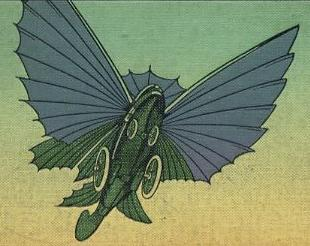
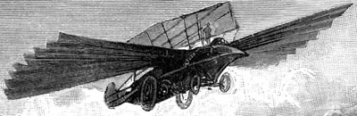

L'Espant
En francès
"L'epouvante". Apareix a l'obra "Maitre du monde" (Amo del
món). Aparell de transport inventat per l'enginyer Robur. Construït
a l'illa X.
Concebut de forma molt particular, l'Espant pot navegar per terra, per sobre
i per sota de l'aigua i pels aires. L'enginy té estructura fusiforme,
amb la part davantera més aguda que la posterior.La carcassa, construïda
en alumini, reposa damunt quatre rodes de seixanta-sis centímetres de
diàmetre i proveïdes d'uns pneumàtics gruixuts. Els radis
d'aquestes rodes s'eixamplen en forma de paletes per tal d'accelerar la marxa
dins l'aigua. Les ales de l'enginy, situades als seus flancs, es despleguen
en el moment del vol per tot seguit batre com les d'un ocell.

Dues turbines
Parson (turbines de vapor), col·locades a cada costat de la quilla, asseguren
la propulsió en el medi aquàtic. Aquestes mateixes turbines contribueixen
també a reforçar la propulsió en el medi atmosfèric.
Contràriament al que és habitual en Jules Verne, aquesta vegada
no ens especifica quina és la font d'energia que fa moure el motor principal
de l'enginy. Tanmateix, podem entreveure, pel que de la lectura es desprèn,
que es tracta de l'electricitat, encara que no se'ns informi com es genera.
La màquina és capaç d'assolir els dos-cents seixanta quilòmetres
per hora. Al mar és capaç de superar els vaixells de guerra més
ràpids.

Els nord-americans,
astorats per la rapidesa d'aquest vehicle, capaç de deixar enrere els
seus automòbils més veloços, proposen, des del seu Congrés,
comprar a Robur l'invent, aquest, però, refusa qualsevol oferta.
L'Espant i el seu amo acabaran la seva existència de forma tràgica.
Un llamp venjador els farà precipitar al mar que esdevindrà la
seva tomba.